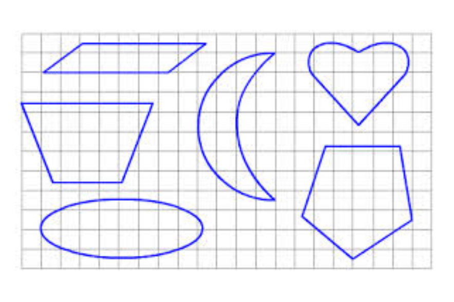
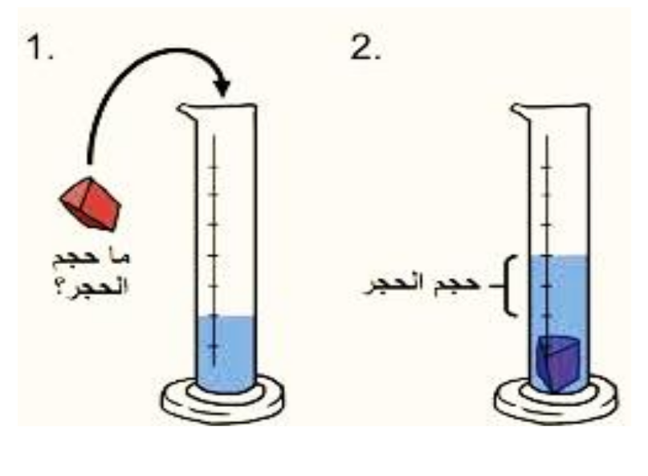
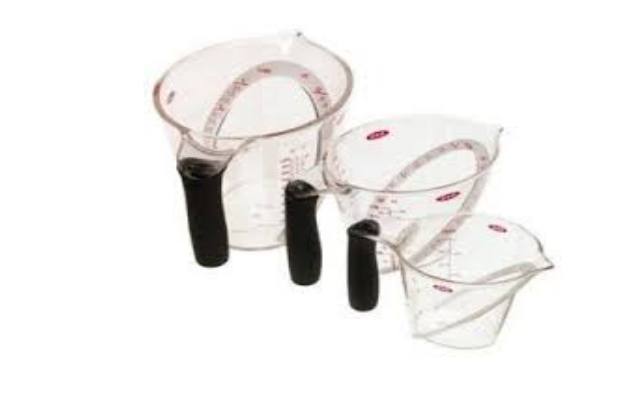
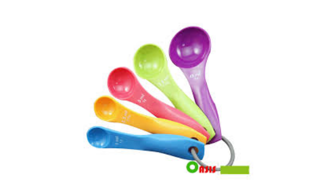
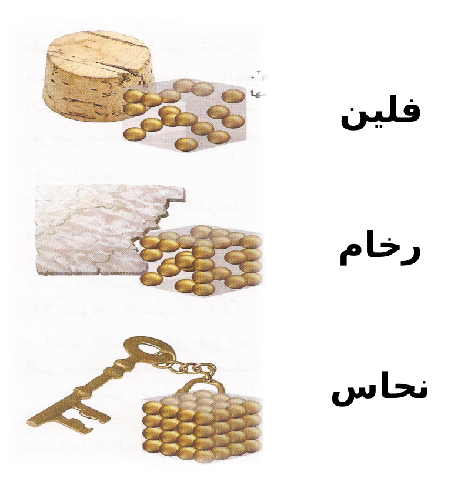
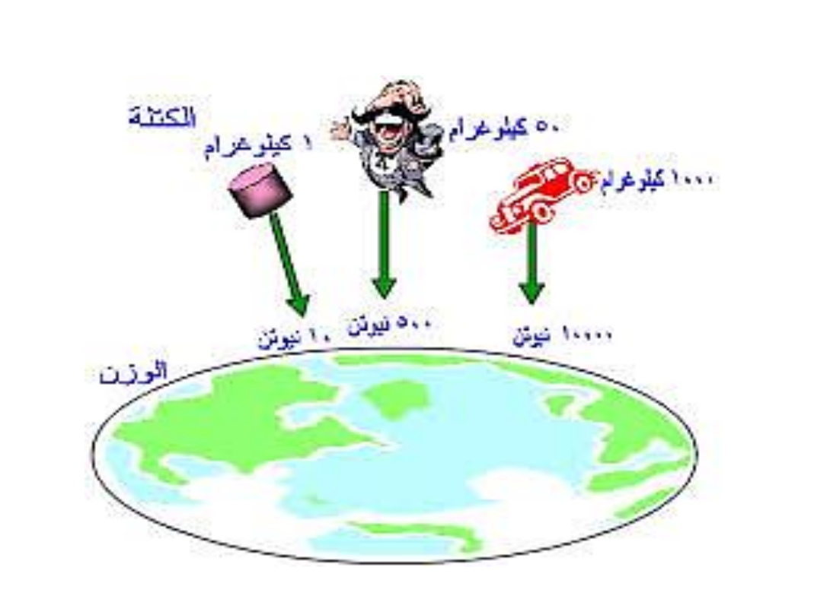
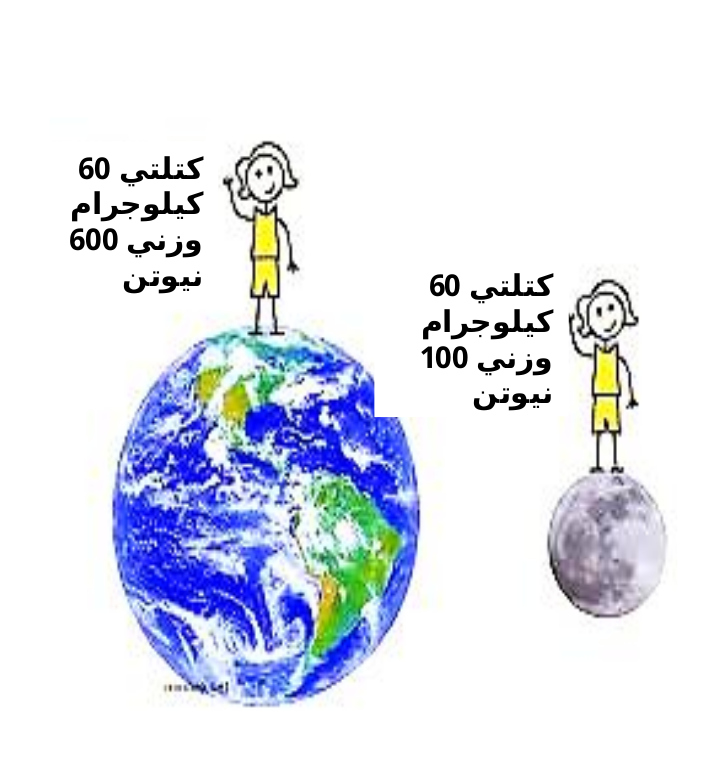
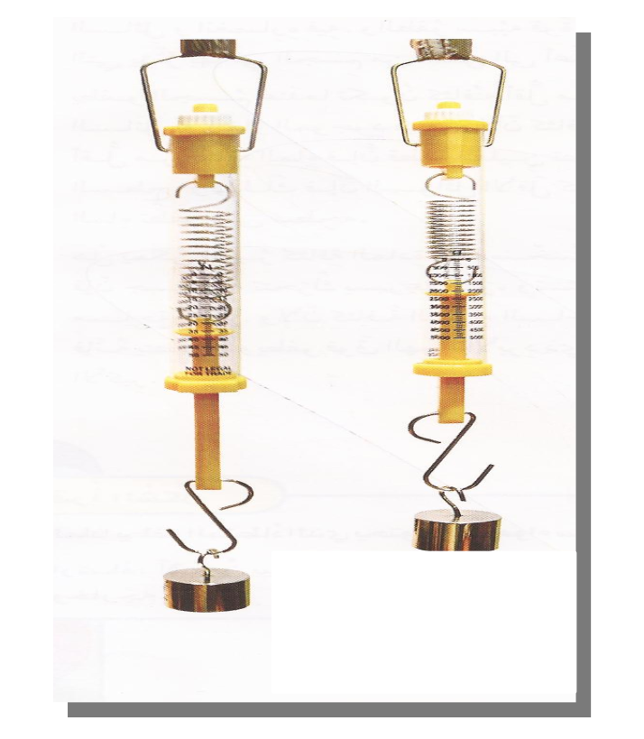

الخاصية: صفة نستطيع ملاحظتها، مثل: اللون والشكل والحجم.
الطول: عدد وحدات القياس من أحد طرفي الجسم إلي الطرف الأخر.
لحساب مساحة جسم على شكل مستطيل، نضرب الطول في العرض.
لحساب مساحة حسم غير مستطيل الشكل، نقسم الشكل إلي مربعات صغيرة.
المساحة: عدد المربعات التي تغطي سطح ما.
كمية المادة المكونة للجسم وتقاس بوحدة الجرام أو الكيلو جرام.
حجم متوازي المستطيلات = الطول x العرض x الأرتفاع
إذا لم يكن الجسم الصلب على شكل متوازي مستطيلات فيمكن قياس حجمه بإستخدام الماء.
الحجم: عدد المكعبات التي تملاً جسم ما.
لقياس حجم السائل
تستخدم الملعقة لقياس الحجم في المطبخ
الأقل كثافة هي التي تطفو.
جزيئات متباعدة ← كثافة أقل
جزيئات متقاربة ← كثافة أكثر
أيهما ستطفو على سطح الماء؟
المملؤة بالهواء .
لأن الكتلة الهواء أقل من الكتلة التراب .
يطفو الجسم عندما تكون كثافته أقل من كثافة السائل أو الغاز.
قوة السائل أو الغاز التي تؤثر بها في الجسم من أسفل إلى أعلى.
قوة الجذب التي تسحب بها الأرض الأجسام نحوها .
  يقاس الوزن بالميزان النـــابضي
عِنْدَما نَعْمَلُ على تَغْييرِ شَكْلِ قِطْعَةِ الصَّلْصالِ، فَإِنَّنا نُحْدِثُ فيها تَغَيُّرًا ؛ لأَنَّها تَبْقَى كَما هي بالرَّغْمِ مِنَ اتِّخاذِها أَشْكالاً عِدَّةً، وفي هَذهِ الْحالَةِ لا يَتَغَيَّرُ حَجْمُها أَوْ كُتْلَتُها. فَالتَّغَيُرُّ الْفيزيائِيُّ لا يَنْتُجُ عَِنْهُ مَوادُّ جَديدةٌ، وَيُبقْي عَلى الْمادَّةِ الأَصْلِيَّةِ.
تَحْدُثُ التَّغَيُّراتُ الْفيزيائِيَُّة حَوْلَنا في ْلأَوْقاتِ جَميعِها. فَعَلى سَبيلِ المِثالِ، يَتَكوَّنُ رَصيفُ الْمُشاةِ في مَدينَتِنا مِنْ مادَّةِ الأَسَْمنْتِ الصُّلْبَةِ، وَلَكِنْ مََع مُرورِ الْوَقْتِ، فَإِنَّها تَتَشََّققُ وَتَنْفَصِل قِطَعًا صَغيرةً تَحْمِلُها الرِّياحُ وَالأَمْطارُ وَتَنْقُلُها بَعيًدا، إِلاّ أَنَّ ذَلِكَ لا يُغَيُِّر مِنْ صِفاتِ مادَّةِ الأسَْمنْتِ نَفْسِها؛ لِذا، فَإِنَّ ما يَطْرَأُ عَلَيْها هُوَ تَغَيُّرٌ فيزيائي.
قَدْ لا تَكونُ التغَّيُّراتُ الْفيزيائِيَّةُ جَميعُها ظاهِرَةً لَنا، وَلَكِنْ يُمْكِنُ أَنْ نَسْتَدِلَّ عليها من التَّغيُّرِ في حَجْمِ الْمادَّةِ، أَوْ شَكْلِها، أَوْ مَلْمَسِها، أَوْ حالَتِها.
لَلمَادَّةِ حَالاَتٌ ثَلاَثٌ: الصَّلاَبَةُ وَالسُّيُولَةُ وَالغَازِيَّةُ. وَبَعْضُ المَوَادِّ تُوجَدُ فِي أَكْثَرَ مِنْ حَالَةٍ. فَالْمَاءُ يُوجَدُ في الطَّبيعَةِ في الْحَالاَتِ الثَّلاَثِ، وَيُمْكِنُ بِسُهُولَةٍ تَحويلُهُ مِنْ حالَةٍ إلى أُخْرَى. وَيُعَدُّ تغَيَرُّ حَالَةِ المَادَّة تَغَيُّرًا فِيزْيَائِيًّا. وَقَدْ يَطْرَأُ تَغَيُّرٌ عَلَى حَجْمِ المادَّةِ عِنْدَ تَحَوُّلِها مِنْ حَالةٍ إِلى أُخْرى، أَمَّا كُتْلَتُها فَلاَ تَتَغَيَّرُ.
عِنْدَ تَسْخِينِ المَادَّةِ الصُّلْبَةِ تَكْتَسِبُ دقَائِقُ المَادَّةِ الطَّاقَةَ الحَرَارِيَّةَ، وَتَتحرَّكُ بِسُرْعةٍ أَكْبرَ. فَإِذَا اكْتَسبَتِ المَادَّةُ الصُّلْبةِ طَاقَةً حَرَارِيَّةً كَافِيَةً فَإِنَّهَا تَتحَوَّلُ إِلَى الحَالَةِ السَّائِلَةِ، وَيُسَمَّى هَذَا التَّحوُّلُ فِي هَذِهِ الحَالَةِ انْصهارًا
التَّبَخُّرُ تَحَوُّلٌ بَطِيءٌ لِلْمَادَّةِ مِنَ الْحالَةِ السَّائِلَةِ إِلَى الْحَالَةِ الْغَازِيَّةِ، مِثْل تَبَخُّرِ مِيَاهِ الأَنْهَارِ وَالبِحَارِ وَالمُحِيطَاتِ عِنْدَ تَعَرُّضِهَا لأَشِعَّةِ الشَّمْسِ.
عِنْدَ تَبْرِيدِ المَادَّةِ تَتَبَاطَأُ حَرَكَةُ دَقائِقِ هَذِهِ المَادَّةِ، ويتَقَارَبُ بَعْضُهَا مِنْ بَعْضٍ، وَيَحْدُثُ التَّكَثُّفُ؛ أَيْ تَتَحَوَّلُ المَادَّةُ مِنَ الْحَالَةِ الغَازِيَّةِ إِلَى الحَالَةِ السَّائِلَةِ .
إِذَا تَرَكْتُ دَرَّاجَتِي خَارِجَ البَيْتِ مُدّةً طَوِيلَةً فَإِنَّها تَصْدَأُ. الصَّدَأُ تَفاعُلٌ كِيمْيَائِيٌّ يَنْتُجُ عَنْ تَفاعُلِ الحَدِيدِ مَعَ الأُكْسِجِينِ المَوْجُودِ فِي الْهَوَاءِ. إِنَّ تَكَوُّنَ صَدَأِ الحَدِيدِ هُوَ تَغَيُّرٌ كِيمْيَائِيٌّ. يَبْدَأُ هَذَا التَّغَيُّرُ بِمَادَّةٍ ذَاتِ نَوْعِيَّةٍ مُعَيَّنَةٍ، وَيَنْتَهي بِمَادَّةٍ أُخْرَى تَخْتَلِفُ فِي خَصَائِصِها كُلِّيًّا عَنِ المَادَّةِ الأَصْلِيَّةِ. فَصَدَأُ الحَدِيدِ يَخْتَلِفُ كُلِّيًّا عَنِ الحَدِيدِ وَالأُكْسِجِينِ.
عِنْدَ طَبْخِ الطَّعَامِ تَتَغيَّرُ خَصَائِصُ الْمَوادِّ الْمَطْبُوخَةِ، وَمِنْهَا اللَّوْنِ وَالطَّعْمُِ. فَالطَّبْخُ يُحْدِثُ تَغَيُّرًا كِيمْيَائِياًّ فِي مَوَادِّ الطَّعَامِ.
إِذَا دَقَّقْنَا النَّظَرَ جَيِّدًا فَسَنَجِدُ أَنَّ دَلاَئِلَ حُدِوثِ التَّغَيُّرِ الكِيمْيَائِيِّ كَثيرَةٌ مِنْ حَوْلِنا. وَيُعَدُّ تَغَيُّرُ اللَّوْنِ مِنَ الدَّلاَئِلِ الَّتِي يَسْهُلُ مُلاحَظَتُهَا. فَصَدَأُ الْحَدِيدِ وَفُقْدانُ الْفِضِّةِ بَرِيقَها مِثَالاَنِ جَيِّدانِ عَلَى تَغَيُّرِ اللَّوْنِ.